FREDINEL BANAAG | STUDIO SOLUM
fusion of art into host architecture, built-form,
or nature as an appendage installation.
STUDIO
SOLUM
I am Fredinel Banaag
architect, designer, artist
provoking in art, design, urbanism
and architecture
I pursue art, architecture, sculpture and design
as an unbounded realm through predicated speculation
to bring out articulated images, forms, objects
and spaces as defined by the experience of it and within it.
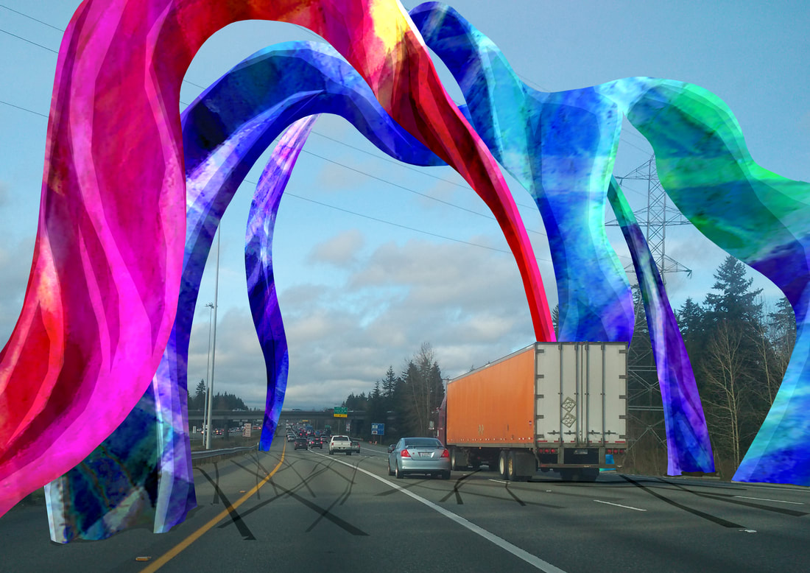
on the education
In the field of architecture and design the students
learn and acquire knowledge, skills, values and attitudes.
These are basically inculcated within the social and
academic environment and through the content and trajectory
of the academic programs.
As architectural and design knowledge is continually
expanding and evolving, education should also promote
skills and attitudes for a flexible and independent
life long learning process in order to probe into,
analyze and evaluate new knowledge.
Architecture and design is a multi-disciplinary
field of study encompassing the wide net of design,
the socio-economic and cultural context, the environmental,
legal and technological aspects, communication skills and
professional studies and management; that draws upon and
is informed by the other branches of knowledge – the arts,
sciences, social sciences, philosophy, engineering and
technology, etc.
Design studio can provide a setting where an independent
creative, inventive, speculative and innovative endeavor
within the multi-faceted aspects of architecture and design
can be pursued and undertaken.
'Design as a process’ is an inherent predicate of 'design as
a product’. Hence, students’ dexterity in creating drawings
and models as design communication tools should be hinged and
grounded on the analytical-critical, multitasking thinking processes.
As architecture and design is a multi-disciplinary integrated
program, education should likewise promote collaborative work
and participative process involving the various stakeholders
and allied professionals.
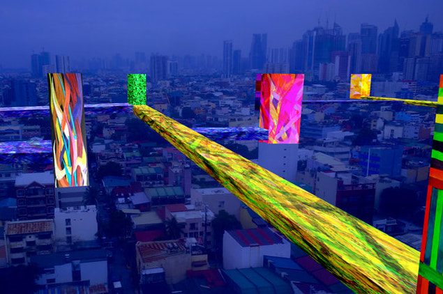
on the design process
'Design as a process' is the predicate of 'design as
a product'. A more meaningful design is based on a
priori design concept grounded on the abstraction
(“abstrahere”) of certain ideas, insight, nuance etc.
for the intended product/artifact even before the non-abstracting
work of detailing starts. To abstract is to make something
intelligible out of something sensible.
If 'design as a process' is a way to the mountain top the a
priori design process establishes at the outset the mountain
top and plots the possible roads into it. The a posteriori
design process however, by a series of accruing steps finds
the mountain top and realizes it only once it is there. What
complicates the process is that there could be many equally
valid mountain tops!
on spatial quality
The determinants of the quality of space are namely:
the functionality, the comfort or ease of occupancy,
the image or character, the atmosphere or the ambiance,
the environmental aspects (sustainability, recyclability,
etc.), the technical aspects (serviceability, accessibility,
etc.), and the experiential, intellectual, emotional realms.
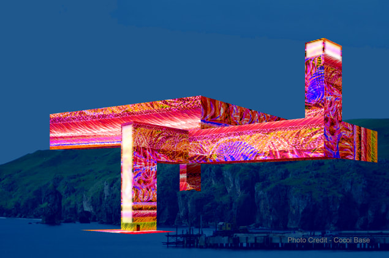
on the intimacy in architecture and design
Intimacy in architecture is layered within the dimension
of personal appreciation (or rejection) of an architectural
space. The degree of closeness or familiarity may have been
acquired through the customary or constant use of the space
over time. The subjectivity of this closeness ultimately
varies from individual to individual due to the uniqueness of each person.
Nevertheless, there are architectural subtleties, which
trigger almost the same or related effects to people of
varied backgrounds or sensibilities. What is ugly is ugly
(or uglier to some). It may not be probably awe inspiring to
one - unless one possesses an abhorrent or discordant sensibility.
Then, it is more of an exemption.
Architecture defines the quality our lives,
affects our attitudes and eventually affords certain behavior to
happen so we may adapt to the environment. The built environment
presents opportunities, which may be deliberately planned in a way
that steps may invite sitting; or may lead to an unplanned effect
where a passageway can cause people to recoil in it and, therefore,
reject it.
Art, architecture, design, sculpture, etc. that is grounded on exploration
and discovery continually fluctuates, beating here and there to blaze trail
where new horizon may open up. Some veins that I have long before mined I
re-discover and probe again into where the depths prod me on as newer expanse
unfolds to the more primordial and more elemental- a grain of sand, a blade of
grass, the impalpable span of all the breath, from all heights to all depths
and the invisible sheen of exuberance, the birthing fire, core of infinities.
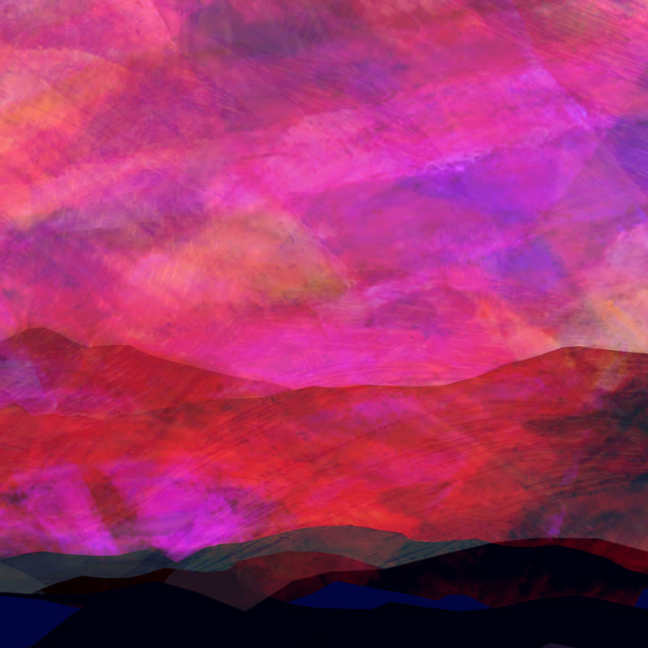
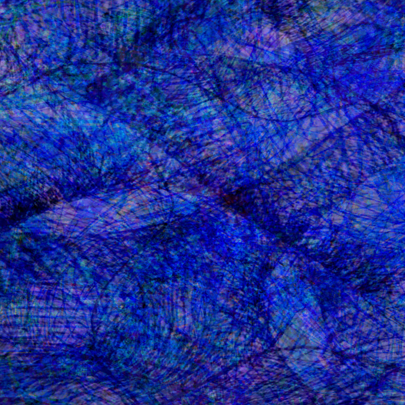
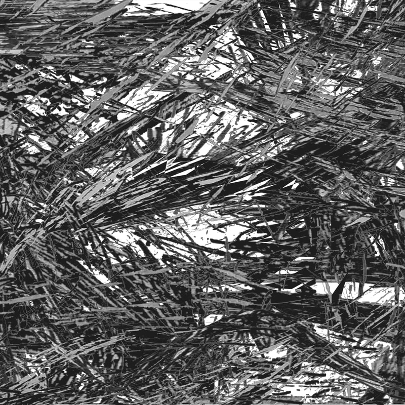
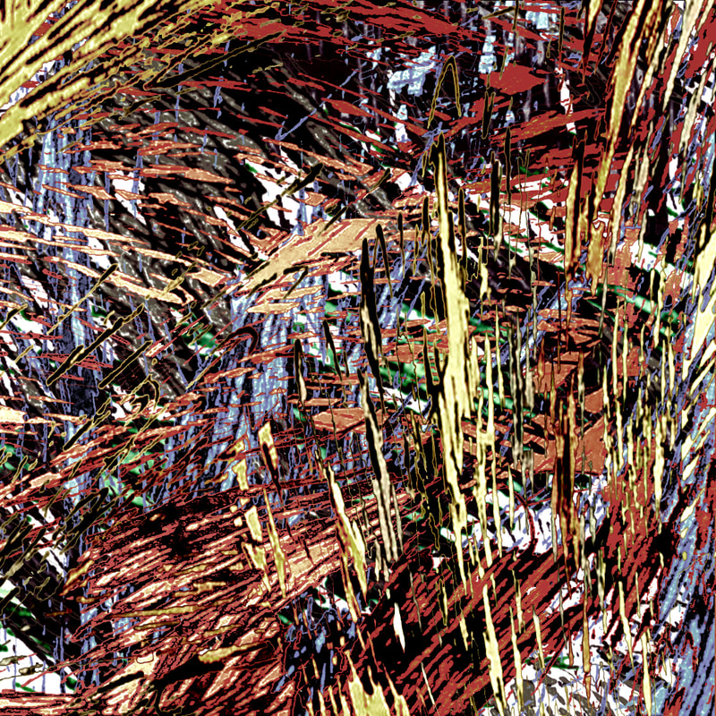
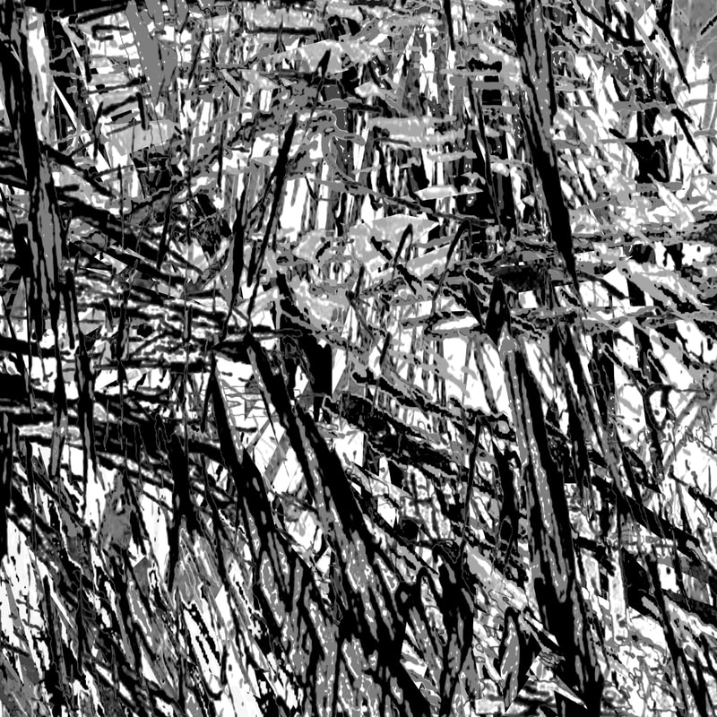
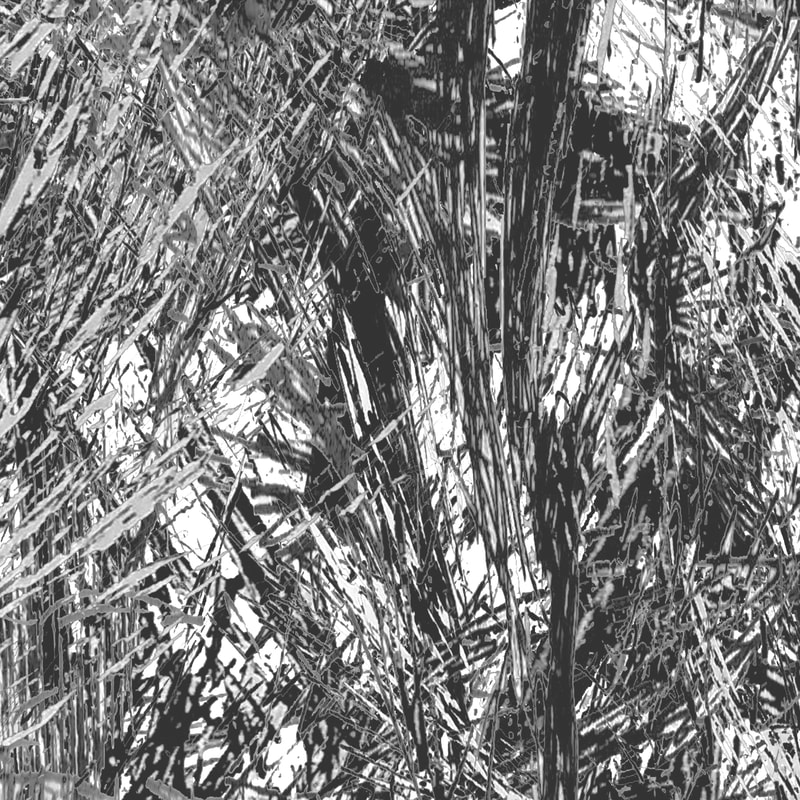
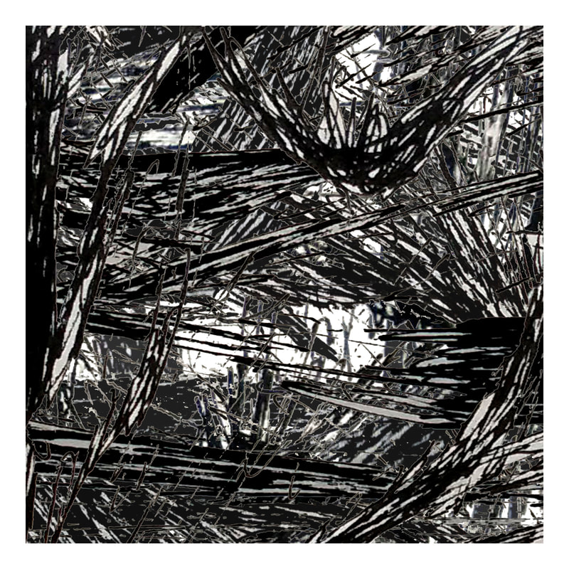
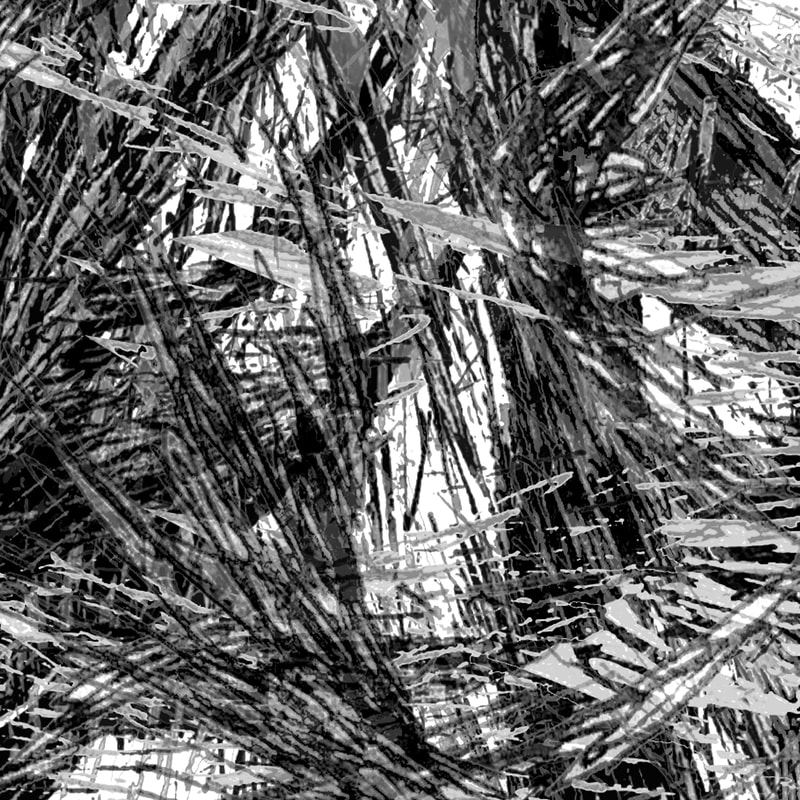
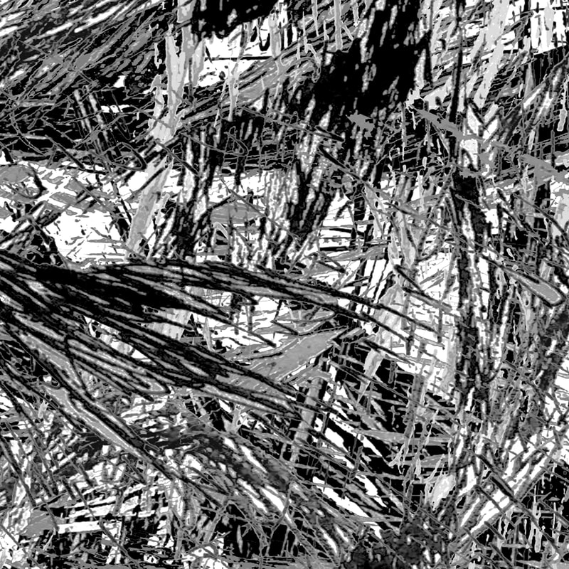
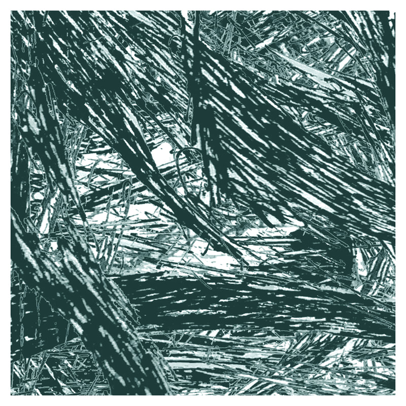
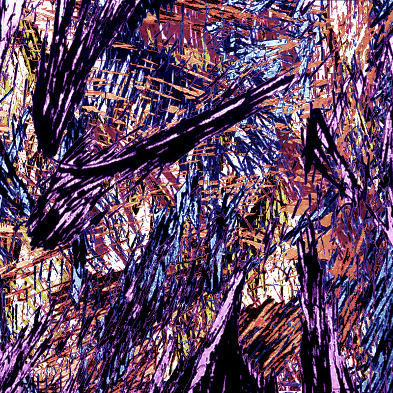
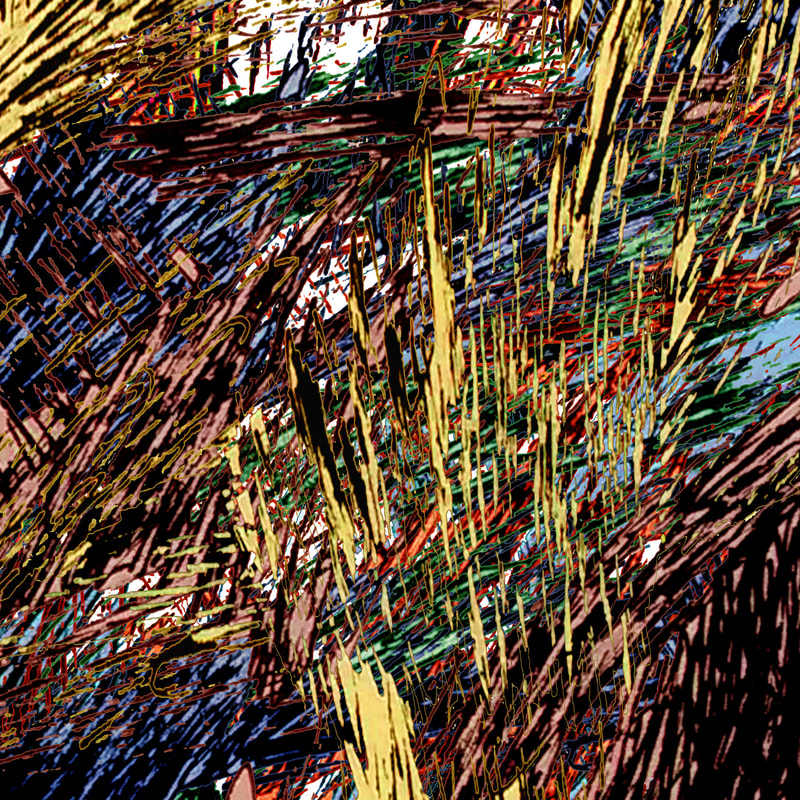
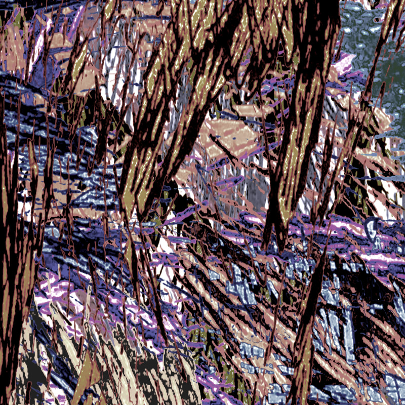